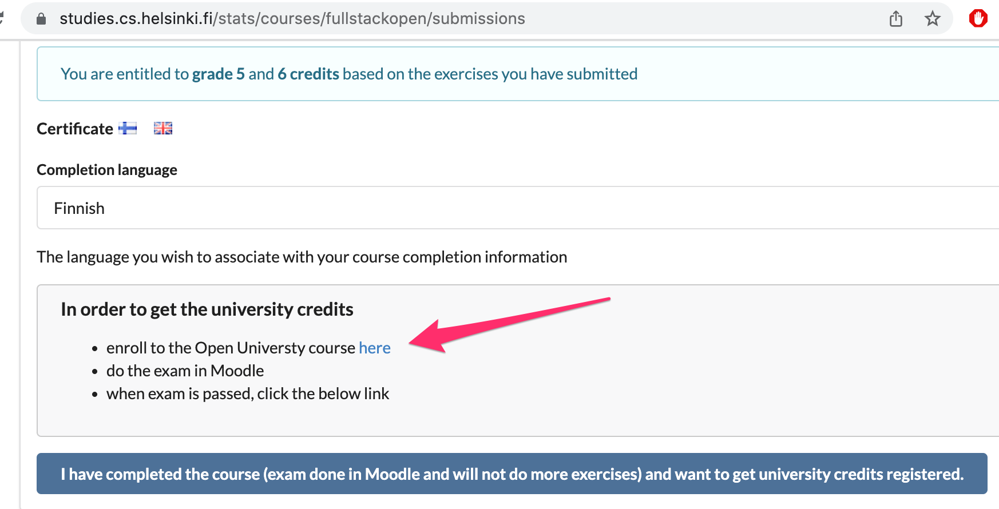
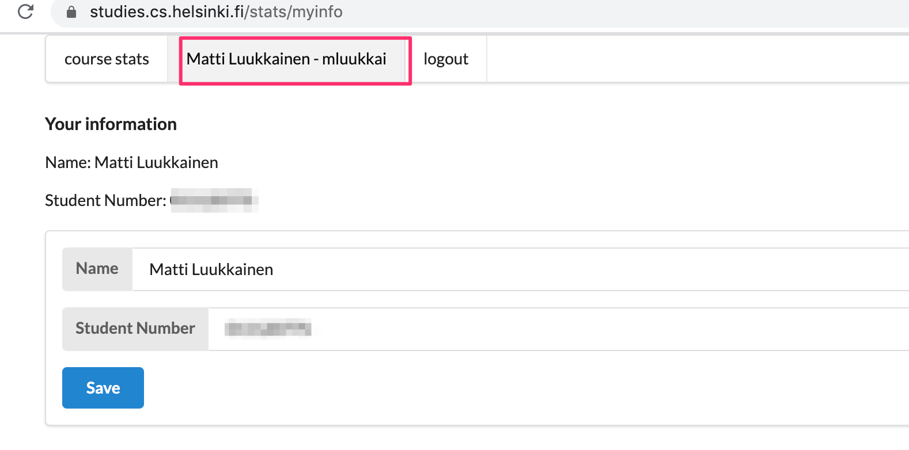
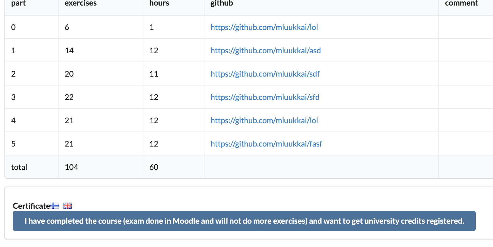

本课程是介绍如何使用 JavaScript 进行现代 Web 应用的开发 。重点是用React实现单页应用，并用 Node.js 实现 RESTful 和 GraphQL web 服务来支撑 React 应用。该课程也包含关于TypeScript、React Native和持续集成的内容。
本课程还包含其他的一些内容，包括调试应用，容器技术，配置、管理运行时环境以及数据库。
Prerequisites
学员应具备良好的编程技能，网络编程和数据库的基本知识，并掌握Git版本管理系统。还希望我们的学员有坚持不懈的精神，有独立解决问题和搜寻信息的能力。
除此之外，不要求以前对 JavaScript 或其他课程的主题有了解。
Course material
课程教材的安排，是按顺序一个章节一个章节地学。
教材中包含了一些练习，这些练习的安排，是为了让前面的教材提供足够的信息来解决每一个练习。你可以边学习课程边做练习，也可以在通读每一章节的内容后，再来完成练习。
在本课程的许多章节，是通过练习构建一个较大的应用，一次构建一小块。也有些练习的应用是贯穿多个章节进行构建的。
课程教材是基于逐步扩展的实例应用，这些实例应用在各个章节中都有变化。最好是跟着代码走，同时独立进行小的修改。在GitHub上可以找到每个章节每一步的示例代码。
Taking the course
本课程包含14个章节，其中第一章节的编号为0，以便与过去的迭代一致。一个章节大概需要一个周（平均15-20小时）的学习，但完成课程的速度是十分灵活的。
从第n章进入n+1章之前，最好对第n章节的主题有足够的了解。在教学方面，本课程使用掌握学习法（Mastery Learning），其精髓就是让你在完成上一章足够的练习之后再进入下一章节。
在第 1-4 章中，你应该至少做完所有没有标有星号（*）的练习。标有星号的练习虽然计入你的最终成绩，但跳过这些练习并不妨碍你做下一章节的必修练习。第5章节没有标有星号的练习，因为与前几章节没有类似的依赖关系。
完成课程的速度是灵活的。
练习完成时间的统计可以通过提交系统找到。
Parts and completion
全栈课程的学习由核心课程和多个扩展课程组成。你可以通过完成这些内容的学习获得5到14个学分。
Parts 0-5 (core course) - Full Stack Web Development (5 cr, CSM141081)
课程的学分和成绩是基于0-7章节提交的练习总数（包括标有星号的练习）。
学分和成绩的计算方法如下。
| exercises | credits | grade |
|---|---|---|
| 138 | 7 | 5 |
| 127 | 6 | 5 |
| 116 | 5 | 5 |
| 105 | 5 | 4 |
| 94 | 5 | 3 |
| 83 | 5 | 2 |
| 72 | 5 | 1 |
如果你想获得大学学分，你必须通过考试。考试不计入你的最终成绩，但你必须通过。你在Moodle学习环境中进行考试，一旦你注册参加考试，就可以通过开放大学课程网页进入该网页。
一旦你完成了足够的练习，达到了合格的成绩，你可以从提交系统下载课程证书。
最后可参加考试的日期是2023年1月10日。注意，你必须在2023年1月9日之前报名参加考试，这是最晚的时间。
你只有在提交了足够的习题以获得5个学分后才能参加考试。在实践中，不建议提交了关键数量的练习后立即参加考试。5-14个学分的考试是一样的，不计入你的成绩。
You do not need to attend the course exam or register to the Open University course in order to obtain the course certificate.
Part 6 - Full Stack Web Development, extension 1 (1 cr, CSM141082)
在学习核心课程的同时，提交至少127份0-7章节的练习，你可以通过这个扩展获得额外的学分。
- 提交至少127道0-7章节的练习。
Part 7 - Full Stack Web Development, extension 2 (1 cr, CSM141083)
在学习核心课程的同时，提交至少138道0-7章节的练习，你可以通过这个扩展获得一个额外的学分。
- 提交至少138道0-7章节的练习。
Part 8 - Full Stack Web Development: GraphQL (1 cr, CSM14113)
通过提交课程第八章节GraphQL的至少22/26道练习，你可以获得一个额外的学分。第8章节可以在第5章节之后的任何时间进行，因为它的内容与第6和第7章节是独立的。
- 第8章节提交至少22/26道练习。
Part 9 - Full Stack Web Development: TypeScript (1 cr, CSM14110)
通过提交课程第九章节TypeScript的至少24/29道练习，你可以获得一个额外的学分。建议你在学习第9章节之前完成第0-7章节。
- 提交至少24/29道第九章节的练习。
Part 10 - Full Stack Web Development: React Native (2 cr, CSM14111)
通过提交第10章节关于React Native课程的25道练习题，你可以获得两个额外的学分。关于这章节的先决条件、练习提交和学分的更多信息可以在第10章节找到。
- 为第10章节提交至少25道练习。
Part 11 - Full Stack Web Development: Continuous Integration / Continuous Delivery (1 cr, CSM14112)
通过提交持续集成/交付课程第11章节的所有练习，你可以获得一个额外的学分。关于这部分的先决条件和练习提交的更多信息可以在第11章节中找到。
- 提交第11章节的所有练习。
Part 12 - Full Stack Web Development: Containers (1 cr, CSM141084)
通过提交第12章节关于容器技术课程的所有练习，你可以获得一个额外的学分。关于这部分的先决条件和练习提交的更多信息可以在第12章节中找到。
- 提交第12章节的所有练习。
Part 13 - Full Stack Web Development: relational databases (1 cr, CSM14114)
通过提交关系数据库课程第13章节的所有练习，你可以获得一个额外的学分。关于这章节的先决条件和练习提交的更多信息可以在第13章节中找到。
- 提交第13章节的所有练习。
Studying the course in a nutshell
如何学习该课程--简要说明(5 cr 核心课程CSM141081)
- 报名参加课程。一旦你完成了足够的练习，你将通过提交系统得到注册链接。阅读这里获取更多信息。
- 激活你的赫尔辛基大学用户账户。你可以在成功报名参加课程后激活你的用户账户。在尝试课程考试之前必须激活用户账户。阅读更多关于激活用户账户的信息，点击这里。
- 在Moodle中进行在线考试。你可以通过此链接进入Moodle。用你的赫尔辛基大学用户账户登录Moodle。
- 保存你的学生号。课程注册后，在提交系统中保存你的赫尔辛基大学学生号。
- 在提交系统中标记课程完成，阅读更多信息，点击这里
如何学习该课程 - 简要说明 (5 cr 核心课程 CSM141081)
- 做练习。练习是通过GitHub提交的，并在提交系统上标记为完成。请注意，第8章节后，每个章节在提交系统中都有一个单独的实例
- 课程证书将在提交系统中提供。
Submitting exercises
练习是通过GitHub提交的，并在提交系统上标记为完成。
如果你要将不同章节的练习提交到同一个仓库，请使用适当的系统来命名你的目录。当然，你可以为每个章节创建一个新的仓库。如果你使用的是一个私人版本库，请添加mattiluukkainen作为合作者。
练习是一次提交一个章节的。一旦你为一个章节提交了练习，你就不能再为该章节提交任何练习。
一个检测抄袭的系统会用来检查提交到GitHub的练习。如果从模型中检测到了答案代码，或者多个学生提交了相同的代码，这种情况将根据赫尔辛基大学的抄袭政策来处理。
许多练习都是一点一点地建立一个较大的应用。在这些情况下，只提交完成的应用就足够了。你可以在每个练习后做一个提交，但这并不强制。
Sign up for the exam
为了获得正式的大学学分，你需要通过在开放大学Moodle系统进行的课程考试。按照下面的说明，进入课程的Moodle空间。
- 在2023年1月9日之前通过开放大学报名参加该课程。
- 一旦你完成足够的练习，你将通过提交系统获得注册链接。

在你完成之后，你可以通过这个链接进入Moodle。
-
通过开放大学成功地注册了课程，并且
-
激活你的赫尔辛基大学用户账户。
- 你可以在成功注册课程后激活你的用户账户。用户账户必须在尝试课程考试前激活。阅读更多关于激活用户账户的信息，点击这里。
课程注册后，在提交系统中保存你的赫尔辛基大学学生号。参见这里，了解如何找到你的学生号。
请注意。
- 你只需要有Moodle权限来参加考试，而不是用来获取课程证书。
- 该课程的学分只提供给通过开放大学成功注册该课程并按照说明完成该课程的学生。
How to get your credits
如果你想获得赫尔辛基大学的学分，请将你的赫尔辛基大学学号保存到练习提交系统

如果你不是赫尔辛基大学的学生，你可以通过开放大学注册课程来获得学号，更多信息见这里。
当你提交了足够的练习以获得合格的成绩，通过了考试，并通过练习提交系统让我们知道你已经完成了课程，你就会收到你的学分。

你可以在通知我们之后的大约四周，在赫尔辛基大学的Sisu和Opintopolku查看你的成绩。
请注意，为了获得大学学分，你需要对每一个完成的章节进行注册，请参见关于注册的更多信息 。
Where do I get my University of Helsinki Student number
当你第一次通过开放大学报名参加课程时，赫尔辛基大学的学号会自动生成。请确认你已经报名参加了课程，然后再去查询你的学号是什么。
还要注意，为了获得课程证书，你不需要注册开放大学!
你可以通过下面的一个选项来了解你的学号是什么。
A) Sisu
如果你有赫尔辛基大学的用户账户，你可以在赫尔辛基大学的学习信息系统Sisu中找到你的学生号。
- 用你的赫尔辛基大学用户名和密码登录Sisu。
- 选择。我的个人资料
- 选择:个人信息
B) Enrollment confirmation email
课程注册后，你会收到一封确认邮件，邮件地址是你在注册表上输入的邮箱。这封邮件或者直接有你的学生号，或者包含一个链接，把你带到一个显示你的赫尔辛基大学学号的页面。
C) Contact Student Services
如果你在通过上述方式找到你的学生号时遇到困难，你可以向赫尔辛基大学学生服务处发送电子邮件
在你的电子邮件中，包括以下信息
-你所注册的课程名称。
-你的姓名，和
-你的出生日期。
学生服务部的电子邮件地址：avoin-student@helsinki.fi
Course certificate
即使你没有向开放大学注册考试，一旦你完成了足够的练习，达到了合格的成绩，你仍然可以从提交系统下载课程证书。
Request a transcript of studies
你可以在你的大学学分注册后，申请一份经过验证的学习成绩单。要申请一份正式的学习成绩单，请联系avoin-student@helsinki.fi。
-
申请官方成绩单时，记得要提到
-
课程的名称。
-
你的全名。
-
你的出生日期，和
-
成绩单的语言。
成绩单将通过电子邮件以电子版的方式交付给你。在你的学校出示这份文件，以便将学分纳入你的学位。是否承认这些学分将由你所在的学校决定。
Expanding on a previously completed course
如果你已经以MOOC或大学课程的形式学习过该课程，你现在可以扩展你的课程。
Expanding on Full stack open
你可以直接接续你上次学到的地方！如果你想重新提交整个章节，请通过email或Discord 联系课程人员mluukkai，说明你的GitHub用户名和你想从提交的内容中删除哪些部分。
Expanding on the University of Helsinki instance of this course
这也是可以的，只要通过email或Discord 联系课程人员mluukkai。
Full stack project
通过开放大学将提供一个价值5、7或10学分的全栈项目。
对于该项目，应用是在React和/或Node中实现的，尽管在React Native中实现一个移动应用也是可以的。
学分的数量是基于所做工作的时间。一个学分大约是17.5小时的工作。工作被评为合格/不合格。
可以以双人或小组形式完成该项目。
参见关于项目的更多信息。
Interview promise
我们的合作者 Terveystalo和Smartly.io，已经给了每个完成课程和项目工作并获得最高学分（14+10）的人一个工作面试的 promise 。如果你在2022年3月15日之前完成项目，那么2021年发布的第12和13章节就不需要了。
这意味着，如果学生选择，报名参加合作方的工作面试。课程的老师Matti Luukkainen会给课程完成后并获得最大的学分的学生发送指引。
你需要是芬兰的居民，才能参加这些面试。
Before you start
本课程推荐使用Chrome浏览器，因为它提供了最好的网络开发工具。另一个选择是火狐浏览器的开发者版本，它提供了同样的功能范围。
课程练习提交到GitHub，所以必须安装Git，并且你应该知道如何使用它。有关说明，见Git和GitHub初学者教程。
安装一些支持 Web 开发的趁手的文本编辑器。强烈推荐Visual Studio Code。
不要用nano、Notepad或Gedit编码。NetBeans对于网络开发也不是很好。与Visual Studio Code相比，也是相当重的。
同时安装Node.js。教材是用16.13.2版本完成的，所以不要安装任何比这更早的版本。参见Node.js安装说明。
Node软件包管理器npm将与Node.js一起自动安装。我们将在整个课程中积极使用npm。Node还带有npx，我们会有几次需要它。
Typos in the material
如果你发现教材中有错别字，或者有些东西表达不清楚，或者只是语法不好，请向课程教材的仓库中提交一个pull request。例如，本页面的markdown源代码可以在仓库中找到，地址是https://github.com/fullstack-hy2020/fullstack-hy2020.github.io/edit/source/src/content/0/en/part0a.md。
在每一章节的教材底部都有一个链接，用于对材料提出修改意见。你可以通过点击该链接来编辑该页的源代码。